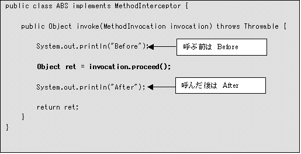

|
 |
|||||
S2AOPの概要S2AOPでは、AOPの機能を提供しています。AOPとは、Aspect Oriented Programming (アスペクト指向プログラミング) の略です。プログラム本来の目的とは異なる処理を内部に埋め込まず、外から織り込むように作ることです。 AOPを考える上でキーとなる概念Advice(MethodInterceptor)プログラム中に挿入されるコードを表します。Interceptorと呼ばれることもあります。 Joinpoint(MethodInvocation)対象となるクラスとAdviceを結合するポイントを表します。AdviceはJoinpointから引数やメソッドの情報を取得することができます。 PointcutどこにJoinpointを設定するのかを定義します。 AspectAdviceとPointcutを関連付けます。 InterTypeフィールドやメソッドの追加、実装するインタフェースの追加など，クラスの静的な構造を変更します。 AOPのメリット
S2AOPのメリット
注意点
S2AOPリファレンス作成すべきファイルS2AOPを使用するにはS2Container の設定ファイル(diconファイル)で行います。設定ファイルの配置場所は、とくに指定がありませんが、通常「Crosscutting Concern」と同じ場所に配置するか、設定を行うコンポーネントと同じ場所に配置します。 設定ファイルの説明aspectタグAdvice(以下Interceptor)をコンポーネントに組み込みます。Interceptorの指定は、ボディでOGNL式を使うか、子タグでcomponentタグを使います。 注意点aspectタグで指定されたコンポーネントは、コンテナの初期化時にコンテナから取得されます。そのため、aspectタグで指定されたコンポーネントのinstance属性がprototypeだったとしても、Interceptor のメソッドが呼び出される度に新しいインスタンスが作成されるわけではありません。 pointcut属性(任意)カンマ区切りで対象となるメソッド名を指定することができます。pointcutを指定しない場合は、コンポーネントが実装しているインターフェースのすべてのメソッドが対象になります。メソッド名には正規表現(JDK1.4のregex)も使えます。 設定例pointcut属性を指定してjava.util.DateのgetTime()メソッドとhashCode()メソッドを対象とする場合以下のようになります。pointcut属性を指定しない場合はjava.util.Dateが実装しているインターフェースのメソッドが対象になります。
<component class="java.util.Date">
<aspect pointcut="getTime,hashCode">
<component class="org.seasar.framework.aop.interceptors.TraceInterceptor"/>
</aspect>
</component>
正規表現を使ってjava.util.Dateのpublicなメソッドすべてを対象としたい場合は、以下のように設定します。
<component class="java.util.Date">
<aspect pointcut=".*">
<component class="org.seasar.framework.aop.interceptors.TraceInterceptor"/>
</aspect>
</component>
pointcutの対象から外したいメソッドがある場合は以下のようにします。
以下は「do」で始まり，その後に「ABC」が続くメソッドをpointcutの対象から外す例です。
doABC()メソッド、doABCDEF()メソッドがpointcutの対象から外れます。
<component class="java.util.Date">
<aspect pointcut="do(?!ABC).*">
<component class="org.seasar.framework.aop.interceptors.TraceInterceptor"/>
</aspect>
</component>
また、以下のような設定も可能です。
「do」で始まり，その後に「ABC」または「BCD」が続くメソッドをpointcutの対象から外す例です。
<component class="java.util.Date">
<aspect pointcut="do(?!ABC|BCD).*">
<component class="org.seasar.framework.aop.interceptors.TraceInterceptor"/>
</aspect>
</component>
interTypeタグInterTypeをコンポーネントに組み込みます。InterTypeの指定は、ボディでOGNL式を使うか、子タグでcomponentタグを使います。 設定例
<component class="java.util.Date">
<interType>
<component class="org.seasar.framework.aop.intertype.PropertyInterType"/>
</interType>
</component>
S2AOPで用意されているInterceptorS2AOPでは、以下のInterceptorを用意しています。また独自のInterceptorを簡単に作成できるようになっています。 (1) TraceInterceptorクラス名org.seasar.framework.aop.interceptors.TraceInterceptor 説明トレース処理を「Crosscutting Concern」として扱うためのInterceptorです。DateクラスにTraceInterceptorを適用したdiconファイルは、以下のようになります。対象とするメソッドはgetTime()とします。
<component class="java.util.Date">
<aspect pointcut="getTime">
<component class="org.seasar.framework.aop.interceptors.TraceInterceptor"/>
</aspect>
</component>
詳しい使用方法はTraceInterceptorを参照してください。 (2) ThrowsInterceptorクラス名org.seasar.framework.aop.interceptors.ThrowsInterceptor 説明例外処理を「Crosscutting concern」として扱うためのInterceptorです。使用するにはThrowsInterceptorを継承し、Object handleThrowable(Throwable, MethodInvocation)を実装するだけです。ThrowableにはThrowableのサブクラスを指定することができます。例えばhandleThrowable(IOException, MethodInvocation)のようにメソッド定義すると、ThrowsInterceptorを適用したコンポーネント内で発生した例外がIOExceptionもしくはIOExceptionのサブクラスの場合に、呼び出されることになります。handleThrowable()はいくつでも定義することができます。詳しい使用方法はThrowsInterceptorを参照してください。 (3) ToStringInterceptorクラス名org.seasar.framework.aop.interceptors.ToStringInterceptor 説明ToString()メソッドによる文字列化処理を「Crosscutting Concern」として扱うためのInterceptorです。
<component class="java.util.Date">
<aspect pointcut="toString">
<component class="org.seasar.framework.aop.interceptors.ToStringInterceptor"/>
</aspect>
</component>
詳しい使用方法はToStringInterceptorを参照してください。 (4) MockInterceptorクラス名org.seasar.framework.aop.interceptors.MockInterceptor 説明Mockを使ったテストを簡単に行うためのInterceptorです。詳しい説明はテスト技法のモックを作成するための設定を参照してください。 (5) DelegateInterceptorクラス名org.seasar.framework.aop.interceptors.DelegateInterceptor 説明メソッド呼び出しを別のコンポーネントに委譲するためのInterceptorです。使用方法はDelegateInterceptorのtargetプロパティに委譲したい相手を指定します。委譲するときのメソッド名が異なる場合には、DelegateInterceptor#addMethodNameMap(String methodName, String targetMethodName)で指定します。例えば、bar()というメソッドをfoo.bar2()に委譲する場合、DelegateInterceptor#setTarget(foo)，DelegateInterceptor#addMethodNameMap("bar", "bar2")のように指定します。詳しい使用方法はDelegateInterceptorを参照してください。 注意targetプロパティに指定されたコンポーネントは、コンテナの初期化時にコンテナから取得されます。このため、targetプロパティに指定されたコンポーネントのinstance属性がprototypeであっても、常に同じインスタンスが使われます。メソッド呼び出しの度に新しいインスタンスをコンテナから取得したい場合は次のPrototypeDelegateInterceptorを使用してください。 (5) PrototypeDelegateInterceptorクラス名org.seasar.framework.aop.interceptors.PrototypeDelegateInterceptor 説明メソッド呼び出しを別のコンポーネントに委譲するためのInterceptorです。メソッド呼び出しの度にコンポーネントをコンテナから取得します。使用方法はPrototypeDelegateInterceptorのtargetNameプロパティに委譲したい相手の名前を指定します。委譲するときのメソッド名が異なる場合には、PrototypeDelegateInterceptor#addMethodNameMap(String methodName, String targetMethodName)で指定します。例えば、bar()というメソッドをfoo.bar2()に委譲する場合、PrototypeDelegateInterceptor#setTarget(foo)，PrototypeDelegateInterceptor#addMethodNameMap("bar", "bar2")のように指定します。詳しい使用方法はPrototypeDelegateInterceptorを参照してください。 (7) SyncInterceptorクラス名org.seasar.framework.aop.interceptors.SyncInterceptor 説明メソッド呼び出しをAspectを使って同期化するためのInterceptorです。ソースを変更することなく、メソッド呼び出しを同期化できます。詳しい使用方法はSyncInterceptorを参照してください。 (8) InterceptorChainクラス名org.seasar.framework.aop.interceptors.InterceptorChain 説明複数のInterceptorをグルーピング化し、再利用しやすくします。複数のInterceptorの組み合わせを複数コンポーネントに適用する場合は、InterceptorChainで複数のInterceptorを1つにまとめて、各コンポーネントにはInterceptorChainを指定するようにするといいでしょう。 <component name="interceptor1" .../> <component name="interceptor2" .../> <component name="interceptor3" .../> (9) InterceptorLifecycleAdapterクラス名org.seasar.framework.aop.interceptors.InterceptorLifecycleAdapter 説明Interceptorはアスペクトをクラスに組み込む際にインスタンス化されるため、singleton以外の場合は意図したとおりに動作しません。
<component name="myInterceptor" instance="prototype" .../>
<aspect pointcut="invoke">
<component class="org.seasar.framework.aop.interceptors.InterceptorLifecycleAdapter">
</aspect>
</component>
<component ...>
<aspect>myInterceptor</aspect>
</component>
独自実装によるInterceptor説明独自にInterceptorを作成する場合は、次のインターフェースまたは、抽象クラスを実装します。
どちらの場合も実装するメソッドは、以下のinvoke()メソッドの１つだけです。
AbstractInterceptorは、MethodInterceptorをimplementsした抽象クラスです。AbstractInterceptorには、Proxyオブジェクトを取得するcreateProxy()メソッドとアスペクトを適用するクラスを取得するgetTargetClass()メソッドがあります。アスペクトを適用したクラス名を必要とするInterceptor(例えば、ログ出力を行うInterceptor)を作成する場合は、AbstractInterceptorを使用することで簡単にクラス名を取得することができます。
MethodInvocationのgetThis()、getMethod()、getArguments()で対象となるオブジェクト、メソッド、引数を取得できます。getThis()でクラス名を取得するとバイトコードで組み込まれたクラス名が取得されます。proceed()を呼び出すと実際のメソッドが呼び出され実行結果を取得することができます。以下のような独自のInterceptorを作成したとします。 注意点Interceptorのインスタンスは、コンテナの初期化時に作成されてクラスに組み込まれます。 そのため、Interceptorを定義した<component>要素のinstance属性がprototype等だったとしても、 Interceptorのメソッドが呼び出される度に新しいインスタンスが作成されるわけではありません。 作成例MethodInvocation#proceed()を呼ぶ前と後で2分され、呼ぶ前は Beforeの個所を実行し、呼んだ後はAfterの個所を実行します。1つのコンポーネントに複数のアスペクトが定義されている場合は、以下のよう実行されます。
詳しい使用方法は独自実装によるInterceptorを参照してください。 S2AOPで用意されているInterTypeS2AOPでは、以下のInterTypeを用意しています。また独自のInterTypeを作成できるようになっています。 (1) PropertyTraceInterTypeクラス名org.seasar.framework.aop.intertype.PropertyInterType 説明フィールドに対するsetter / getterメソッドを追加するInterTypeです。 注意点privateのフィールドに対するgetter / setterは作成されません。
<component class="Hoge">
<interType>
<component class="org.seasar.framework.aop.interType.PropertyInterType"/>
</interType>
</component>
PropertyInterTypeを適用するクラスには、setter / getterを追加したいフィールドにPropertyアノテーションを指定します。
import org.seasar.framework.container.annotation.tiger.Property;
import org.seasar.framework.container.annotation.tiger.PropertyType;
public class Hoge {
@Property
int foo;
@Property(PropertyType.READ)
long bar;
@Property(PropertyType.WRITE)
String baz;
}
Backport175アノテーションでは次のようになります。
public class Hoge {
/** @org.seasar.framework.container.annotation.backport175.Property */
int foo;
/** @org.seasar.framework.container.annotation.backport175.Property("read") */
long bar;
/** @org.seasar.framework.container.annotation.backport175.Property("write") */
String baz;
}
上の例では、フィールドfooにはgetterとsetterメソッドが、barにはgetterメソッドが、bazにはsetterメソッドが作成されます。 クラスにPropertyアノテーションを指定することもできます。その指定がPropertyアノテーションの指定されていないフィールドに適用されます。
import org.seasar.framework.container.annotation.tiger.Property;
import org.seasar.framework.container.annotation.tiger.PropertyType;
@Property
public class Hoge {
int foo;
long bar;
@Property(PropertyType.NONE)
String baz;
}
Backport175アノテーションでは次のようになります。
/** @org.seasar.framework.container.annotation.backport175.Property */
public class Hoge {
int foo;
long bar;
/** @org.seasar.framework.container.annotation.backport175.Property("none") */
String baz;
}
上の例では、フィールドfooとbarにはgetterとsetterメソッドが作成されますが、bazにはメソッドが作成されません。 (2) InterTypeChainクラス名org.seasar.framework.aop.intertye.InterTypeChain 説明複数のInterTypeをグルーピング化し、再利用しやすくします。複数のInterTypeの組み合わせを複数コンポーネントに適用する場合は、InterTGypeChainで複数のInterTypeを1つにまとめて、各コンポーネントにはInterTypeChainを指定するようにするといいでしょう。 <component name="interType1" .../> <component name="interType2" .../> <component name="interType3" .../> 独自実装によるInterType説明独自にInterTypeを作成する場合は、次のインターフェースまたは、抽象クラスを実装します。
InterTypeを実装するクラスは、以下のメソッドを実装します。
targetClassはInterTypeが適用されるクラスです。enhancedClassはInterTypeを組み込むクラスで、先に登録されているInterceptorやInterTypeが適用済みの場合もあります。 AbstractInterTypeは、InterTypeをimplementsした抽象クラスです。AbstractInterTyeのサブクラスは次のメソッドを実装します。
AbstractInterTypeのサブクラスは、次のメソッドで必要なオブジェクトを取得することができます。
AbstractInterTypeは、フィールドやメソッド，実装するインタフェースを追加するためのユーティリティメソッドを提供します。以下はその一部です。
diconファイルを使用しないでアスペクトを組み込む方法diconファイルの設定を行わずプログラム上でアスペクトを組み込むこともできます。作成方法は次のようになります。
java.util.DateクラスにTraceInterceptorをプログラム上で適用する場合は、次のようになります。対象となるメソッドはgetTime()とします。
Pointcut pointcut = new PointcutImpl(new String[]{"getTime"});
Aspect aspect = new AspectImpl(new TraceInterceptor(), pointcut);
AopProxy aopProxy = new AopProxy(Date.class, new Aspect[]{aspect});
Date proxy = (Date) aopProxy.create();
proxy.getTime();
Example以下のサンプルを実行する場合は、セットアップを行う必要があります。 TraceInterceptorTraceInterceptorを使用してjava.util.ArrayListクラスとjava.util.DateクラスのgetTime()メソッドとhashCode()メソッドが呼ばれた場合にトレースを出力させましょう。作成するファイルは以下のとおりです。
diconファイルの作成
Trace.dicon
<?xml version="1.0" encoding="Shift_JIS"?>
<!DOCTYPE components PUBLIC "-//SEASAR//DTD S2Container//EN"
"http://www.seasar.org/dtd/components.dtd">
<components>
<component name="traceInterceptor"
class="org.seasar.framework.aop.interceptors.TraceInterceptor"/>
<component class="java.util.ArrayList>
<aspect>traceInterceptor</aspect>
</component>
<component class="java.util.Date">
<arg>0</arg>
<aspect pointcut="getTime, hashCode">
traceInterceptor
</aspect>
</component>
</components>
実行ファイルの作成
AopTraceClient.java
package examples.aop.traceinterceptor;
import java.util.Date;
import java.util.List;
import org.seasar.framework.container.S2Container;
import org.seasar.framework.container.factory.S2ContainerFactory;
public class AopTraceClient {
private static String PATH = "examples/aop/traceinterceptor/Trace.dicon";
public static void main(String[] args) {
S2Container container = S2ContainerFactory.create(PATH);
List list = (List) container.getComponent(List.class);
list.size();
Date date = (Date) container.getComponent(Date.class);
date.getTime();
date.hashCode();
}
}
実行結果 メソッドが呼ばれる前と後でトレースが出力されているのが確認できます。また、java.util.DateのhashCode()メソッドはメソッド内でgetTime()メソッドを呼んでいるのでhashCode()メソッドとgetTime()メソッドがトレースされていることが確認できます。 BEGIN java.util.ArrayList#size() END java.util.ArrayList#size() : 0 BEGIN java.util.Date#getTime() END java.util.Date#getTime() : 0 BEGIN java.util.Date#hashCode() BEGIN java.util.Date#getTime() END java.util.Date#getTime() : 0 END java.util.Date#hashCode() : 0 このサンプルは、seasar2/src/examples/aop/traceinterceptor以下に用意されています。 ThrowsInterceptor(1) ThrowsInterceptorを使って、例外が発生した場合でも処理を続けられるようにしましょう。作成するファイルは以下のようになります。
例外を発生させるクラスの作成
Checker.java
package examples.aop.throwsinterceptor;
public class Checker {
public void check(String str) {
if (str != null) {
System.out.println(str);
} else {
throw new NullPointerException("null");
}
}
}
ThrowsInterceptorを継承するInterceptorの作成
HandleThrowableInterceptor.java
package examples.aop.throwsinterceptor;
import org.aopalliance.intercept.MethodInvocation;
import org.seasar.framework.aop.interceptors.ThrowsInterceptor;
public class HandleThrowableInterceptor extends ThrowsInterceptor {
public void handleThrowable(Throwable t, MethodInvocation invocation)
throws Throwable {
}
}
diconファイルの作成
Checker.dicon
<?xml version="1.0" encoding="Shift_JIS"?>
<!DOCTYPE components PUBLIC "-//SEASAR//DTD S2Container//EN"
"http://www.seasar.org/dtd/components.dtd">
<components>
<component name="handleThrowableInterceptor"
class="examples.aop.throwsinterceptor.HandleThrowableInterceptor"/>
<component class="examples.aop.throwsinterceptor.Checker">
<aspect pointcut="check">
handleThrowableInterceptor
</aspect>
</component>
</components>
実行ファイルの作成
AopCheckerClient.java
package examples.aop.throwsinterceptor;
import org.seasar.framework.container.S2Container;
import org.seasar.framework.container.factory.S2ContainerFactory;
public class AopCheckerClient {
private static String PATH = "examples/aop/throwsinterceptor/Checker.dicon";
public static void main(String[] args) {
S2Container container = S2ContainerFactory.create(PATH);
Checker checker = (Checker) container.getComponent(Checker.class);
checker.check("foo");
checker.check(null);
checker.check("hoge");
}
}
実行結果 "hoge"が表示されていることから例外で処理が止まっていないことが確認できます。 foo hoge このサンプルは、seasar2/src/examples/aop/throwsinterceptorr以下に用意されています。 (2) 例外を別の例外に変換するInterceptorを作成して変換したメッセージを表示させましょう。作成するInterceptorは、先ほどThrowsInterceptorを継承して作成したクラス(HandleThrowableInterceptor.java)を応用して作成しましょう 例外を別の例外に変換するInterceptorの作成handleThrowable(Throwable, MethodInvocation)メソッドの第1引数がNullPointerExceptionの場合、org.seasar.framework.exception.SRuntimeExceptionを発生させてメッセージを変更します。
package examples.aop.throwsinterceptor;
import org.aopalliance.intercept.MethodInvocation;
import org.seasar.framework.aop.interceptors.ThrowsInterceptor;
import org.seasar.framework.exception.SRuntimeException;
public class HandleThrowableInterceptor extends ThrowsInterceptor {
public void handleThrowable(NullPointerException t, MethodInvocation invocation)
throws Throwable {
throw new SRuntimeException("ESSR0007", new Object[] { "引数" });
}
}
先ほど作成した実行ファイルを使って実行します。 実行結果エラーメッセージが変わっているのが確認できます。
foo
org.seasar.framework.exception.SRuntimeException: [ESSR0007]引数はnullあるいは空であってはいけません
at examples.aop.throwsinterceptor.HandleThrowableInterceptor.
handleThrowable(HandleThrowableInterceptor.java:11)
at sun.reflect.NativeMethodAccessorImpl.invoke0(Native Method)
at sun.reflect.NativeMethodAccessorImpl.invoke(NativeMethodAccessorImpl.java:39)
at sun.reflect.DelegatingMethodAccessorImpl.invoke(DelegatingMethodAccessorImpl.java:25)
at java.lang.reflect.Method.invoke(Method.java:324)
at org.seasar.framework.aop.interceptors.ThrowsInterceptor.invoke(ThrowsInterceptor.java:55)
at org.seasar.framework.aop.impl.MethodInvocationImpl.proceed(MethodInvocationImpl.java:60)
at org.seasar.framework.aop.proxy.AopProxy.intercept(AopProxy.java:123)
at examples.aop.throwsinterceptor.Checker$$EnhancerByCGLIB$$8cdef299.check(<generated>)
at examples.aop.throwsinterceptor.AopCheckerClient.main(AopCheckerClient.java:13)
Exception in thread "main"
このサンプルは、seasar2/src/examples/aop/throwsinterceptorr以下に用意されています。 ToStringInterceptorToStringInterceptorを使用してtoString()でフィールドの情報を文字列化しましょう。作成するファイルは以下のとおりです。
エンティティクラスの作成 Entity.java
package examples.aop.tostringinterceptor;
import java.util.HashMap;
import java.util.Map;
public class Entity {
private int intValue = 1;
private static int staticIntValue = 12;
private double doubleValue = 12.3;
private String stringValue = "1234";
public static final int staticFinalIntValue = 12345;
private Map mapValue = new HashMap();
private InnerEntity innerEntity;
public Entity(InnerEntity innerEntity) {
this.innerEntity = innerEntity;
}
}
EntityImpl.java
package examples.aop.tostringinterceptor;
public class EntityImpl extends Entity {
private int implValue = 1;
public EntityImpl(InnerEntity innerEntity) {
super(innerEntity);
}
}
EntityImplImpl.java
package examples.aop.tostringinterceptor;
public class EntityImplImpl extends EntityImpl {
private int implImplValue = 1;
public EntityImplImpl(InnerEntity innerEntity) {
super(innerEntity);
}
}
InnerEntity.java
package examples.aop.tostringinterceptor;
public class InnerEntity {
int innerInt = 0;
long innerLong = 234;
String str = "foo";
char[] charArray = new char[]{'a', 'b', 'c'};
}
diconファイルの作成
ToString.dicon
<?xml version="1.0" encoding="Shift_JIS"?>
<!DOCTYPE components PUBLIC "-//SEASAR//DTD S2Container//EN"
"http://www.seasar.org/dtd/components.dtd">
<components>
<component name="toStringInterceptor"
class="org.seasar.framework.aop.interceptors.ToStringInterceptor"/>
<component class="examples.aop.tostringinterceptor.EntityImplImpl">
<arg>
innerEntity
</arg>
<aspect pointcut="toString">
toStringInterceptor
</aspect>
</component>
<component name="innerEntity" class="examples.aop.tostringinterceptor.InnerEntity">
<aspect pointcut="toString">
toStringInterceptor
</aspect>
</component>
</components>
実行ファイルの作成
AopToStringClient.java
package examples.aop.tostringinterceptor;
import org.seasar.framework.container.S2Container;
import org.seasar.framework.container.factory.S2ContainerFactory;
public class AopToStringClient {
private static String PATH = "examples/aop/tostringinterceptor/ToString.dicon";
public static void main(String[] args) {
S2Container container = S2ContainerFactory.create(PATH);
Entity entity = (Entity) container.getComponent(EntityImpl.class);
System.out.println(entity);
}
}
実行結果 ObjectクラスのtoString()メソッドと異なり、クラス名とハッシュ値だけでなく、各フィールドの値が表示されていることが確認できます。 また、EntityImplImplクラスのフィールド(implimplValue)だけでなく、スーパークラスであるEntityImplクラスのフィールド(implValue)やそのさらにスーパークラスであるEntityクラスのフィールド(その他のフィールド)が表示されていることが確認できます。 Entityクラスがフィールドとして持っているInnerEntityクラスのフィールドも表示されています。
examples.aop.tostringinterceptor.EntityImplImpl@1db4f6f[
implImplValue=1,implValue=1,intValue=1,staticIntValue=12,doubleValue=12.3,
stringValue="1234",staticFinalIntValue=12345,mapValue={},
innerEntity=examples.aop.tostringinterceptor.InnerEntity@13c1b02[
innerInt=0,innerLong=234,str="foo",charArray={'a','b','c'}]]
このサンプルは、seasar2/src/examples/aop/tostringinterceptor以下に用意されています。 DelegateInterceptorS2AOPで用意されているDelegateInterceptorを使って、他のクラスのメソッドに委譲させましょう。
インターフェースの作成
IBase.java
package examples.aop.delegateinterceptor;
public interface IBase {
public abstract void run();
}
インターフェースを実装した抽象クラスの作成
Dummy.java
package examples.aop.delegateinterceptor;
public abstract class Dummy implements IBase {
}
インターフェースを実装したクラスの作成
Substance.java
package examples.aop.delegateinterceptor;
public class Substance implements IBase {
public void run() {
System.out.println("substance");
}
}
diconファイルの作成
Delegate.dicon
<?xml version="1.0" encoding="Shift_JIS"?>
<!DOCTYPE components PUBLIC "-//SEASAR//DTD S2Container//EN"
"http://www.seasar.org/dtd/components.dtd">
<components>
<component class="examples.aop.delegateinterceptor.Dummy">
<aspect>
<component class="org.seasar.framework.aop.interceptors.DelegateInterceptor">
<initMethod name="setTarget">
<arg>new examples.aop.delegateinterceptor.Substance()</arg>
</initMethod>
</component>
</aspect>
</component>
</components>
実行ファイルの作成
package examples.aop.delegateinterceptor;
import org.seasar.framework.container.S2Container;
import org.seasar.framework.container.factory.S2ContainerFactory;
public class AopDelegateClient {
private static String PATH = "examples/aop/delegateinterceptor/Delegate.dicon";
public static void main( String[] args ){
S2Container container = S2ContainerFactory.create(PATH);
IBase base = (IBase) container.getComponent(Dummy.class);
base.run();
}
}
実行結果 コンソールに"substance"と表示されているのでDummy#run()がSubstance#run()に委譲されているのが確認できます。 substance PrototypeDelegateInterceptorS2AOPで用意されているPrototypeDelegateInterceptorを使って、singletonのコンポーネントからprototypeのコンポーネントのメソッドに委譲させましょう。
インターフェースの作成
IBase.java
package examples.aop.prototypedelegateinterceptor;
public interface IBase {
public abstract void run();
}
インターフェースを実装した抽象クラスの作成
Dummy.java
package examples.aop.prototypedelegateinterceptor;
public abstract class Dummy implements IBase {
}
インターフェースを実装したクラスの作成
Substance.java
package examples.aop.prototypedelegateinterceptor;
public class Substance implements IBase {
public void run() {
System.out.println(this);
}
}
diconファイルの作成
PrototypeDelegate.dicon
<?xml version="1.0" encoding="Shift_JIS"?>
<!DOCTYPE components PUBLIC "-//SEASAR//DTD S2Container//EN"
"http://www.seasar.org/dtd/components.dtd">
<components>
<component class="examples.aop.prototypedelegateinterceptor.Dummy">
<aspect>
<component class="org.seasar.framework.aop.interceptors.PrototypeDelegateInterceptor">
<property name="targetName">"target"</property>
</component>
</aspect>
</component>
<component name="target"
class="examples.aop.prototypedelegateinterceptor.Substance"
instance="prototype"/>
</components>
実行ファイルの作成
package examples.aop.prototypedelegateinterceptor;
import org.seasar.framework.container.S2Container;
import org.seasar.framework.container.factory.S2ContainerFactory;
public class AopPrototypeDelegateClient {
private static String PATH = "examples/aop/prototypedelegateinterceptor/PrototypeDelegate.dicon";
public static void main( String[] args ){
S2Container container = S2ContainerFactory.create(PATH);
IBase base = (IBase) container.getComponent(Dummy.class);
for (int i = 0; i < 5; ++i) {
base.run();
}
}
}
実行結果 コンソールに"examples.aop.prototypedelegateinterceptor.Substance@～"と表示されているのでDummy#run()がSubstance#run()に委譲されているのが確認できます。また、"@"の後に表示されているハッシュコード値が異なっていることから，run()メソッドを呼び出すたびに新しいSubstanceのインスタンスが作成されていることが分かります。 examples.aop.prototypedelegateinterceptor.Substance@ae533a examples.aop.prototypedelegateinterceptor.Substance@da18ac examples.aop.prototypedelegateinterceptor.Substance@8a0544 examples.aop.prototypedelegateinterceptor.Substance@401369 examples.aop.prototypedelegateinterceptor.Substance@e49dcd SyncInterceptorSyncInterceptorを使って、同期を取りましょう。
Count.java
package examples.aop.syncinterceptor;
public interface Count {
public void add();
public int get();
}
インターフェースの実装クラス
CountImpl.java
package examples.aop.syncinterceptor;
public class CountImpl implements Count {
private int _count = 0;
public void add() {
int a = _count;
try {
Thread.sleep(2000);
} catch (InterruptedException e) {
e.printStackTrace();
}
_count = a + 1;
System.out.println(a);
}
public int get() {
return _count;
}
}
diconファイルの作成
Count.dicon
<?xml version="1.0" encoding="Shift_JIS"?>
<!DOCTYPE components PUBLIC "-//SEASAR//DTD S2Container//EN"
"http://www.seasar.org/dtd/components.dtd">
<components>
<component class="examples.aop.syncinterceptor.CountImpl">
</component>
</components>
実行ファイルの作成
AopSyncClient.java
package examples.aop.syncinterceptor;
import org.seasar.framework.container.S2Container;
import org.seasar.framework.container.factory.S2ContainerFactory;
public class AopSyncClient {
private String PATH = "examples/aop/syncinterceptor/SyncCalc.dicon";
private Count _count = null;
public void init() {
S2Container container = S2ContainerFactory.create(PATH);
_count = (Count) container.getComponent(Count.class);
}
public void start() {
System.out.println("count: " + _count.get());
Runnable r = new Runnable() {
public void run() {
_count.add();
}
};
Thread[] thres = new Thread[5];
for (int i=0; i<5; i++) {
thres[i] = new Thread(r);
thres[i].start();
}
for (int i=0; i<5; i++) {
try {
thres[i].join();
} catch (InterruptedException e) {
e.printStackTrace();
}
}
System.out.println("count: " + _count.get());
}
public static void main(String[] args) {
AopSyncClient asc = new AopSyncClient();
asc.init();
asc.start();
}
}
実行結果 同期が取れていないことが確認できます。 count: 0 0 0 0 0 0 count: 1SyncInterceptorを適用して同期が取れるようにしましょう。
Count.dicon
<?xml version="1.0" encoding="Shift_JIS"?>
<!DOCTYPE components PUBLIC "-//SEASAR//DTD S2Container//EN"
"http://www.seasar.org/dtd/components.dtd">
<components>
<component class="examples.aop.syncinterceptor.CountImpl">
<aspect>
<component class="org.seasar.framework.aop.interceptors.SyncInterceptor"/>
</aspect>
</component>
</components>
実行結果 １ずつ加算されていることから同期が取れていることが確認できます。 count: 0 0 1 2 3 4 count: 5 このサンプルは、seasar2/src/examples/aop/syncinterceptor以下に用意されています。 独自実装によるInterceptorクラス名、メソッド名、引数とメソッドの処理時間を計測してトレースするInterceptorを作成しましょう。また、そのInterceptorを使用して重い処理を行った時間をトレースさせましょう。作成するファイルは以下のとおりです。
独自実装のIntercepterの作成
MeasurementInterceptor.java
package examples.aop.originalinterceptor;
import org.aopalliance.intercept.MethodInvocation;
import org.seasar.framework.aop.interceptors.AbstractInterceptor;
public class MeasurementInterceptor extends AbstractInterceptor{
public Object invoke(MethodInvocation invocation) throws Throwable {
long start = 0;
long end = 0;
StringBuffer buf = new StringBuffer(100);
buf.append(getTargetClass(invocation).getName());
buf.append("#");
buf.append(invocation.getMethod().getName());
buf.append("(");
Object[] args = invocation.getArguments();
if (args != null && args.length > 0) {
for (int i = 0; i < args.length; ++i) {
buf.append(args[i]);
buf.append(", ");
}
buf.setLength(buf.length() - 2);
}
buf.append(")");
try {
start = System.currentTimeMillis();
Object ret = invocation.proceed();
end = System.currentTimeMillis();
buf.append(" : ");
return ret;
} catch (Throwable t) {
buf.append(" Throwable:");
buf.append(t);
throw t;
} finally {
System.out.println(buf.toString() + (end - start));
}
}
}
重い処理を行うクラスの作成
HeavyProcess.java
package examples.aop.originalinterceptor;
public class HeavyProcess {
public void heavy(){
try{
Thread.sleep(5000);
} catch (InterruptedException ex) {
ex.printStackTrace();
}
}
}
diconファイルの作成
Measurement.dicon
<?xml version="1.0" encoding="Shift_JIS"?>
<!DOCTYPE components PUBLIC "-//SEASAR//DTD S2Container//EN"
"http://www.seasar.org/dtd/components.dtd">
<components>
<component name="measurement" class="examples.aop.originalinterceptor.MeasurementInterceptor"/>
<component class="examples.aop.originalinterceptor.HeavyProcess">
<aspect pointcut="heavy">
measurement
</aspect>
</component>
</components>
実行ファイルの作成
AopMeasurementClient.java
package examples.aop.originalinterceptor;
import org.seasar.framework.container.S2Container;
import org.seasar.framework.container.factory.S2ContainerFactory;
public class AopMeasurementClient {
private static String PATH = "examples/aop/originalinterceptor/Measurement.dicon";
public static void main(String[] args) {
S2Container container = S2ContainerFactory.create(PATH);
HeavyProcess heavyProcess = (HeavyProcess) container
.getComponent(HeavyProcess.class);
heavyProcess.heavy();
}
}
実行結果 クラス名、メソッド名、引数とメソッドの処理時間がトレースされているのが確認できます。 examples.aop.HeavyProcess#heavy() : 5004 このサンプルは、seasar2/src/examples/aop/originalinterceptor以下に用意されています。 |
||
| Copyright© 2004-2005, The Seasar Foundation and the others. All rights reserved. |